5. [课程]：Spring 框架入门
关键词：多层架构、Spring、依赖注入。
Spring 最初于 2004 年作为对象容器问世。此后，它已演变出多个分支：Spring MVC、Spring Data、Spring Batch 等 [http://spring.io]。在本章中，我们将仅关注对象容器。以下是几个要点：
- 一个应用程序包含多个类，其中部分类共享必须唯一存在的对象（单例）。Spring 负责创建和管理这些单例；
- Spring 将这些单例放置在一个称为“上下文”的结构中；
- 类通过名称、类型或两者结合向 Spring 请求，从而访问应用程序的单例；
- Spring 会创建单例并管理它们可能涉及的任何依赖关系：一个单例确实可能持有对一个或多个其他单例的引用。当 Spring 创建一个单例时，它也会同时创建其依赖项；
- 当基于 Spring 的应用程序启动时，它可请求 Spring 创建所有应用程序的单例。这些单例随后将在 Spring 上下文中可用；
- Spring 简化了分层架构和基于接口的编程。在简单情况下，每个层都作为单例实现，并实现一个接口。如果应用程序使用的是层接口而非其实现类，则会形成一种可扩展的架构，这使得您可以更改一个层的实现而不影响其他层，这得益于以下两个特性：
- 应用程序通过层名称获取该层的引用。Spring 向其提供的是实现该层的类的引用；
- 应用程序将此引用视为该层的接口引用，而非类引用；
单例可以通过三种方式声明，这些方式可以组合使用：
- 在 XML 文件中，
- 在特殊的配置类中；
- 通过注解在任意类中声明；
下面，我们给出三个配置示例：
- [示例-01]：在单个 XML 文件中进行集中配置；
- [示例-02]：在单个 Java 类中进行集中配置；
- [示例-03]：配置分散在多个 Java 类中；
最后一个示例 [example-04] 重点介绍了分层架构的 Spring 配置。这是最重要的示例，本文档中将始终使用该示例来配置各种架构。
这四个示例为后续内容奠定了基础：
- Spring 配置与依赖注入；
- 使用 Maven 管理项目的依赖关系；
- 使用 JUnit 测试项目；
5.1. 支持
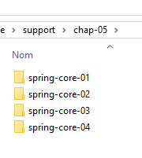 |  |
[support / chap-05] 文件夹中包含本章的 Eclipse 项目。
5.2. 示例-01
5.2.1. Eclipse 项目
 |
5.2.2. [Person] 类
 |
package istia.st.spring.core;
public class Personne {
// fields
private String nom;
private String prenom;
private int age;
// manufacturers
public Personne() {
}
public Personne(String nom, String prénom, int âge) {
this.nom = nom;
this.prenom = prénom;
this.age = âge;
}
// toString
public String toString() {
return String.format("Personne[%s, %s,%d]", prenom, nom, age);
}
// getters and setters
public String getNom() {
return nom;
}
public void setNom(String nom) {
this.nom = nom;
}
public String getPrenom() {
return prenom;
}
public void setPrenom(String prenom) {
this.prenom = prenom;
}
public int getAge() {
return age;
}
public void setAge(int age) {
this.age = age;
}
}
注：getter 和 setter 可以按以下方式自动生成 [1-2]：
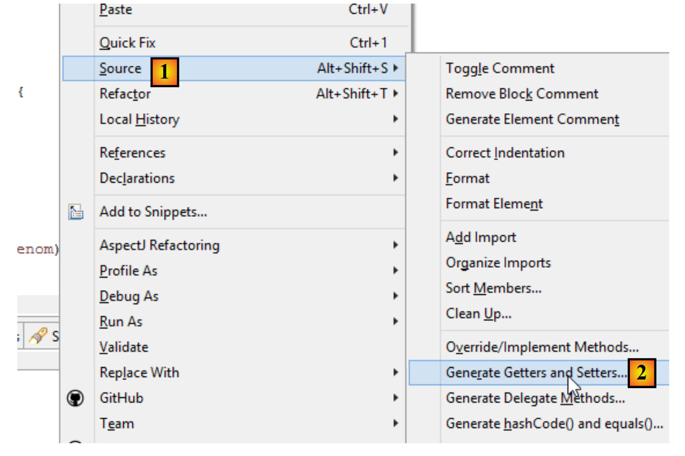 |
5.2.3. [Apartment] 类
 |
package istia.st.spring.core;
public class Appartement {
// fields
private Personne proprietaire;
private int surface;
// getters and setters
public Personne getProprietaire() {
return proprietaire;
}
public void setProprietaire(Personne proprietaire) {
this.proprietaire = proprietaire;
}
public int getSurface() {
return surface;
}
public void setSurface(int surface) {
this.surface = surface;
}
// toString
public String toString() {
return String.format("Appartement[%s, %s]", proprietaire, surface);
}
}
注意：该类没有显式构造函数。在这种情况下，始终存在一个无参的默认构造函数（该构造函数不执行任何操作）。当您创建构造函数时，该默认构造函数将不再隐式存在。此时，您必须显式定义它：
5.2.4. Spring 配置文件
 |
<?xml version="1.0" encoding="UTF-8"?>
<beans xmlns="http://www.springframework.org/schema/beans" xmlns:xsi="http://www.w3.org/2001/XMLSchema-instance" xmlns:util="http://www.springframework.org/schema/util"
xsi:schemaLocation="http://www.springframework.org/schema/beans http://www.springframework.org/schema/beans/spring-beans-4.0.xsd
http://www.springframework.org/schema/util http://www.springframework.org/schema/util/spring-util-4.0.xsd">
<!-- Person 01 -->
<bean id="personne_01" class="istia.st.spring.core.Personne">
<constructor-arg index="0" value="dubois" />
<constructor-arg index="1" value="paul" />
<constructor-arg index="2" value="34" />
</bean>
<!-- Person 02 -->
<bean id="personne_02" class="istia.st.spring.core.Personne">
<property name="nom" value="martin" />
<property name="prenom" value="micheline" />
<property name="age" value="18" />
</bean>
<!-- a list of people -->
<util:list id="club">
<ref bean="personne_01" />
<ref bean="personne_02" />
</util:list>
<!-- an apartment -->
<bean id="appartement" class="istia.st.spring.core.Appartement">
<property name="surface" value="100" />
<property name="proprietaire" ref="personne_01" />
</bean>
</beans>
- 第 2 行、第 27 行：单例在 <beans> 标签内定义；
- 第 6–10 行：每个单例由一个 <bean> 标签定义；
- 第 6 行：[id] 是单例的标识符。[class] 是要实例化的类的全名；
- 第 7–9 行：传递给 [Person] 类构造函数的三个参数；
- 第 12–16 行：首先使用默认构造函数 [new Person()] 创建 [Person] 类。然后，对于每个 [property] 标签，都会调用该类的 setter 方法。例如，在第 13 行，将执行 [setName("martin")] 方法。因此，必须存在 [setName] 方法。这一点非常重要，请务必记住；
- 第 18–21 行：使用 <util:list> 标签定义了一个作为列表的单例；
- 第 19 行：引用了第 6 行定义的单例 [person_01]。这就是所谓的依赖注入。可以使用两个属性来初始化单例的字段：
- [value]：用于将基本类型值（字符串、数字、日期等）赋值给字段，
- [ref]：将 Spring 对象的引用赋值给该字段；
注：Spring 配置文件可按以下方式生成 [1-4]：
 |
5.2.5. 可执行类
 |
package istia.st.spring.core;
import java.util.ArrayList;
import java.util.List;
import org.springframework.context.ApplicationContext;
import org.springframework.context.support.ClassPathXmlApplicationContext;
public class Demo01 {
@SuppressWarnings({ "unchecked", "resource" })
public static void main(String[] args) {
// spring context retrieval
ApplicationContext ctx = new ClassPathXmlApplicationContext("config-01.xml");
// beans are recovered
Personne p01 = ctx.getBean("personne_01", Personne.class);
Personne p02 = ctx.getBean("personne_02", Personne.class);
List<Personne> club = ctx.getBean("club", new ArrayList<Personne>().getClass());
Appartement appart01 = ctx.getBean(Appartement.class);
// we display them
System.out.println("personnes--------");
System.out.println(p01);
System.out.println(p02);
System.out.println("club--------");
for (Personne p : club) {
System.out.println(p);
}
System.out.println("appartement--------");
System.out.println(appart01);
// recovered beans are singletons
// they can be requested several times, but the same bean is always retrieved
Personne p01b = ctx.getBean("personne_01", Personne.class);
System.out.println(String.format("beans [p01,p01b] identiques ? %s", p01b == p01));
}
}
- 第 14 行：创建 Spring 上下文。随后，[config-01.xml] 文件中定义的所有单例都会被实例化；
- 第 16 行：请求一个由 [person_01] 标识的、类型为 [Person] 的单例引用。该第二个参数是可选的，但如果省略，则返回一个类型为 [Object] 的引用，随后必须将其强制转换为类型 [Person]；
- 第 19 行：我们不使用 Bean 的名称，仅使用其类型，因为 [Apartment] 类型的单例只有一个；
- 第 18 行：同时使用了目标单例的标识符和类型。由于 [new ArrayList<Person>().getClass()] 类型的单例仅有一个，因此标识符是多余的；
- 第 32–33 行：表明如果多次请求同一个单例，我们总是得到相同的引用，从而证明我们确实在处理一个单例。这一点很重要，必须理解；
注：可按以下方式生成可执行类 [1-6]：
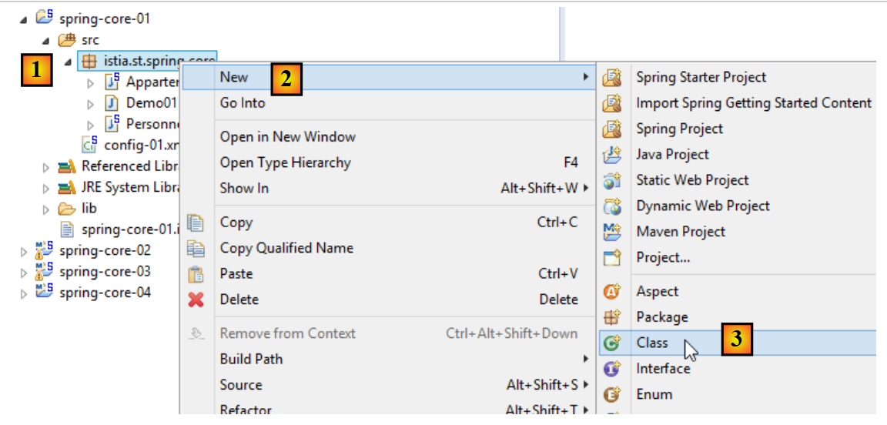 |
 |
- 勾选 [6] 可确保生成的类包含一个静态方法 [main]，从而使其可执行；
5.2.6. 项目依赖项
 |
- Spring 依赖项：[spring-core, spring-beans, spring-context, spring-expression, commons-logging]；
依赖项按以下方式添加到项目中：
 |
- 在 [1] 中：右键单击项目 / [构建设置] / [配置构建设置]；
 |
- 在 [2] 中：如果要添加的 JAR 文件位于项目文件夹内，请选择 [添加 JAR 文件]。否则，请选择 [添加外部 JAR 文件]；
 |
- 在 [3] 中，选择要添加到项目 ClassPath 中的 JAR 文件（此处，它们位于项目内的 [lib] 文件夹中）；
定义：项目的 [ClassPath] 是运行该项目的 JVM（Java 虚拟机）用于查找项目所引用的类的文件夹集合。对于 Eclipse 项目，[ClassPath] 由以下元素组成：
- 项目的 [bin] 文件夹；
- 项目 [Build Path] 中的元素；
[bin] 文件夹是编译 [src] 文件夹后生成的文件夹。 因此，放置在 [src] 文件夹中的所有内容都会自动成为 [ClassPath] 的一部分（即使它不是 .java 文件）。因此，在前面的项目中，位于 [src] 文件夹中的 Spring 配置文件 [config-01.xml]，将在运行时成为项目 [ClassPath] 的一部分。
5.2.7. 结果
5.3. 示例-02
5.3.1. Eclipse 项目
 |
5.3.2. Spring 配置类
package istia.st.spring.core;
import java.util.ArrayList;
import java.util.List;
import org.springframework.context.annotation.Bean;
import org.springframework.context.annotation.Configuration;
@Configuration
public class Config {
@Bean
public Personne personne_01() {
return new Personne("Paul", "Dubois", 34);
}
@Bean
public Personne personne_02() {
return new Personne("Martin", "Micheline", 18);
}
@Bean
public List<Personne> club(Personne personne_01, Personne personne_02) {
List<Personne> personnes = new ArrayList<Personne>();
personnes.add(personne_01);
personnes.add(personne_02);
return personnes;
}
@Bean
public Appartement appartement(Personne personne_01) {
Appartement appartement = new Appartement();
appartement.setSurface(200);
appartement.setPropriétaire(personne_01);
return appartement;
}
}
- 第 9 行：[@Configuration] 注解是 Spring 的注解。它表示被注解的类定义了单例。这些单例通过 [@Bean] 注解进行定义。Spring 将执行所有带有 [@Bean] 注解的方法。这些方法会创建应用程序的单例；
- 第 12–15 行：定义了一个由 [person_01]（即方法名）标识的单例。
- 第 23 行：参数 [person_01, person_02] 采用了单例的名称。Spring 将自动使用这些单例的引用来初始化它们。这被称为参数注入；
这种配置单例的方式比使用 XML 文件的方式更为明确。实际上，我们正在复现 Spring 基于 XML 文件所做的隐式操作。
5.3.3. 可执行类
 |
package istia.st.spring.core;
import java.util.ArrayList;
import java.util.List;
import org.springframework.context.annotation.AnnotationConfigApplicationContext;
public class Demo02 {
@SuppressWarnings({ "unchecked", "resource" })
public static void main(String[] args) {
// spring context retrieval
AnnotationConfigApplicationContext ctx = new AnnotationConfigApplicationContext(Config.class);
// beans are recovered
Personne p01 = ctx.getBean("personne_01", Personne.class);
Personne p02 = ctx.getBean("personne_02", Personne.class);
List<Personne> club = ctx.getBean("club", new ArrayList<Personne>().getClass());
Appartement appart01 = ctx.getBean(Appartement.class);
// we display them
System.out.println("personnes--------");
System.out.println(p01);
System.out.println(p02);
System.out.println("club--------");
for (Personne p : club) {
System.out.println(p);
}
System.out.println("appartement--------");
System.out.println(appart01);
// recovered beans are singletons
// they can be requested several times, but the same bean is always retrieved
Personne p01b = ctx.getBean("personne_01", Personne.class);
System.out.println(String.format("beans [p01,p01b] identiques ? %s", p01b == p01));
}
}
- 第 13 行会导致 [Config] 类中定义的所有 Bean 被实例化；
- 其余代码保持不变；
5.3.4. 项目依赖项
 |  |
依赖项由以下 [pom.xml] 文件定义：
<project xmlns="http://maven.apache.org/POM/4.0.0" xmlns:xsi="http://www.w3.org/2001/XMLSchema-instance"
xsi:schemaLocation="http://maven.apache.org/POM/4.0.0 http://maven.apache.org/xsd/maven-4.0.0.xsd">
<modelVersion>4.0.0</modelVersion>
<groupId>istia.st.spring.core</groupId>
<artifactId>spring-core-02</artifactId>
<version>0.0.1-SNAPSHOT</version>
<name>spring-core-02</name>
<description>Introduction à Spring</description>
<properties>
<project.build.sourceEncoding>UTF-8</project.build.sourceEncoding>
<java.version>1.7</java.version>
</properties>
<dependencies>
<!-- Spring -->
<dependency>
<groupId>org.springframework</groupId>
<artifactId>spring-context</artifactId>
<version>4.1.3.RELEASE</version>
</dependency>
</dependencies>
<!-- plugins -->
<build>
<plugins>
<plugin>
<artifactId>maven-assembly-plugin</artifactId>
<configuration>
<descriptorRefs>
<descriptorRef>jar-with-dependencies</descriptorRef>
</descriptorRefs>
</configuration>
</plugin>
<plugin>
<groupId>org.apache.maven.plugins</groupId>
<artifactId>maven-surefire-plugin</artifactId>
<version>2.18.1</version>
</plugin>
</plugins>
</build>
</project>
当使用依赖关系不明的 Java 库时，手动管理项目的依赖关系会让人头疼。例如，用于管理数据库访问的 [Hibernate] 框架就有数十个依赖项。[Maven] 项目解决了这个问题。 您只需指定所需的依赖项，系统便会自动在遍布互联网的 Maven 仓库中进行搜索。如果所请求的依赖项本身还有依赖项，这些依赖项也会被自动下载。这些下载的依赖项存储在机器上的本地仓库中。如果以后另一个应用程序需要相同的依赖项，它将不会被重新下载，而是从本地仓库中检索。一个依赖项由以下元素构成：
- 第 17 行：一个 <dependency> 标签；
- 第 18 行：一个 [groupId] 属性，通常用于标识创建该依赖项的公司；
- 第 19 行：用于标识该依赖项的 [artifactId] 属性；
- 第 20 行：[version] 属性，用于标识所需的版本；
生成该项目本身将产生一个由第 4–8 行定义的 Maven 工件：
- 第 4–6 行：即我们刚才描述的 [groupId, artifactId, version] 属性；
- 第 7–8 行：为可选属性；
稍后我们将再来探讨第 24–40 行所起的作用。要将一个标准的 Eclipse 项目转换为 Maven 项目，你需要做两件事：
- 创建上文所示的 [pom.xml] 文件；
- 声明该项目现为 Maven 项目 [1-4]：
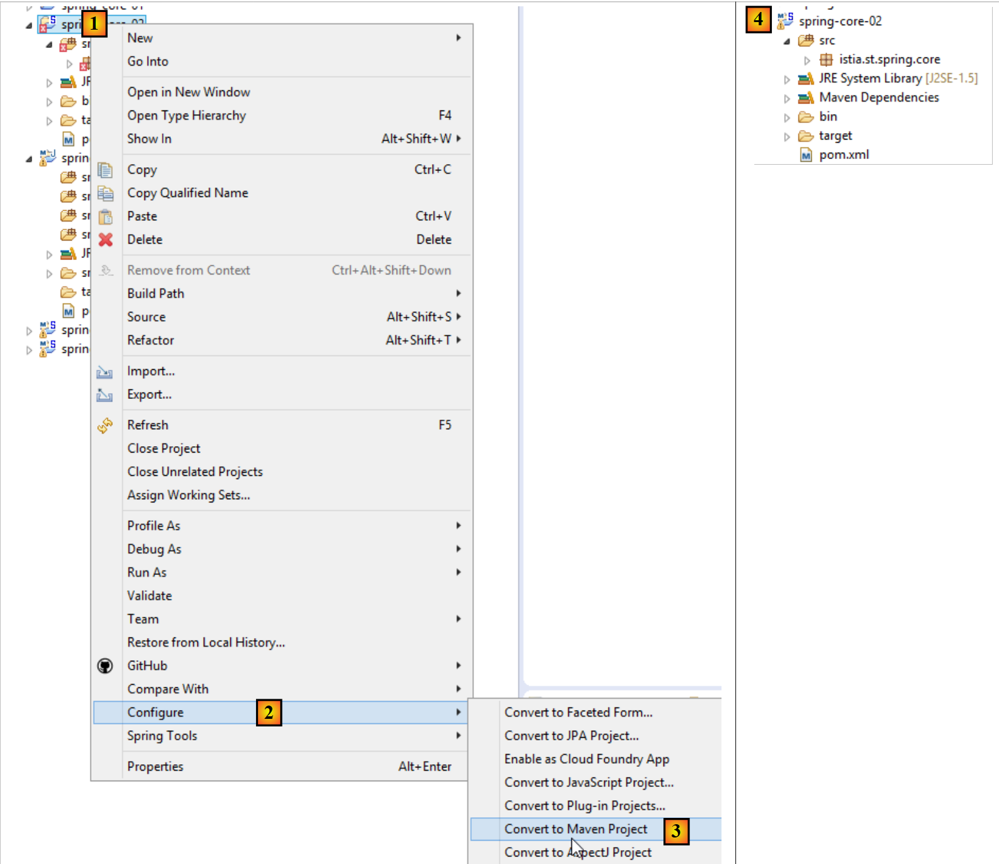 |
Maven 项目的图标以字母 M 为标志 [4]。字母 S 表示该项目包含 Spring 组件。不建议（像我们刚才那样）将 Eclipse 项目转换为 Maven 项目，因为这样会导致项目缺乏 Maven 项目应有的结构，有时可能会引发意想不到的问题。
5.3.5. 生成项目的 Maven 工件
我们将 [pom.xml] 文件第 4–6 行定义的元素称为该项目的 Maven 工件：
<groupId>istia.st.spring.core</groupId>
<artifactId>spring-core-02</artifactId>
<version>0.0.1-SNAPSHOT</version>
要生成此构建产物，[pom.xml] 文件中必须包含以下第 3 至 7 行：
<build>
<plugins>
<plugin>
<groupId>org.apache.maven.plugins</groupId>
<artifactId>maven-surefire-plugin</artifactId>
<version>2.18.1</version>
</plugin>
</plugins>
</build>
这些定义了能够生成项目工件的 Maven 插件。然后，我们按以下步骤进行：
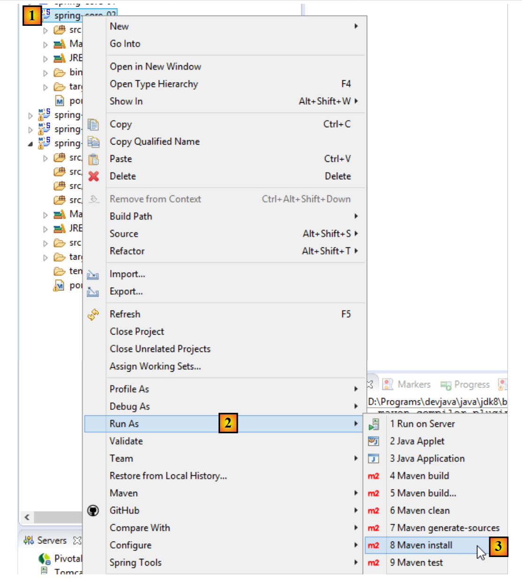 |
通过这种方式生成的工件将存入本地 Maven 仓库。其位置可在 Eclipse 配置中找到：
 |
随后，您可以验证该 Maven 工件是否已正确安装：
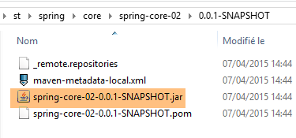 |
从现在起，另一个本地 Maven 项目可以使用此归档文件。
5.4. 示例-03
5.4.1. Eclipse 项目
这次，我们创建一个 Maven 项目 [1-8]：
 |
 |
- 在 [3b] 中：指定一个空文件夹，项目将生成在此处；
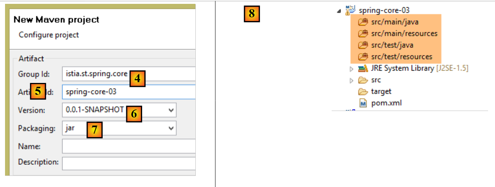 |
- 在 [4] 中：指定项目所属的 Maven 组标识符；
- 在 [5] 中：生成的 Maven 工件的名称：
- 在 [6] 中：其版本号；
- 在 [7] 中：其打包格式（其他格式包括 war、ear、apk 等）；
- 在 [8] 中：由此创建的项目；
默认情况下，Maven 项目具有特定的目录结构：
- [src/main/java]：项目的源代码。这些源代码编译后的输出将放入项目的 [target/classes] 文件夹中；
- [src/main/resources]：必须位于项目类路径中但并非 Java 源文件的资源。这些资源将原样复制到项目的 [target/classes] 文件夹中；
- [src/test/java]：项目的测试源代码。这些源代码编译后的输出将放入项目的 [target/test-classes] 文件夹中。这些元素不会包含在项目的 Maven 归档中；
- [src/test/resources]：用于测试且必须位于项目类路径中，但并非 Java 源文件的资源。它们将原样复制到项目的 [target/test-classes] 文件夹中；
我们按以下方式完成该项目：
 |
5.4.2. Maven 配置
系统默认会生成一个 [pom.xml] 文件。我们对其进行如下修改：
<project xmlns="http://maven.apache.org/POM/4.0.0" xmlns:xsi="http://www.w3.org/2001/XMLSchema-instance"
xsi:schemaLocation="http://maven.apache.org/POM/4.0.0 http://maven.apache.org/xsd/maven-4.0.0.xsd">
<modelVersion>4.0.0</modelVersion>
<groupId>istia.st.spring.core</groupId>
<artifactId>spring-core-03</artifactId>
<version>0.0.1-SNAPSHOT</version>
<name>spring-core-03</name>
<description>Introduction à Spring</description>
<properties>
<project.build.sourceEncoding>UTF-8</project.build.sourceEncoding>
<java.version>1.8</java.version>
</properties>
<!-- maven parent project -->
<parent>
<groupId>org.springframework.boot</groupId>
<artifactId>spring-boot-starter-parent</artifactId>
<version>1.2.3.RELEASE</version>
</parent>
<dependencies>
<!-- Spring Context -->
<dependency>
<groupId>org.springframework</groupId>
<artifactId>spring-context</artifactId>
</dependency>
<!-- logs -->
<dependency>
<groupId>org.springframework.boot</groupId>
<artifactId>spring-boot-starter-logging</artifactId>
</dependency>
</dependencies>
<!-- plugins -->
<build>
<plugins>
<!-- to generate the project archive with its dependencies -->
<plugin>
<artifactId>maven-assembly-plugin</artifactId>
<configuration>
<descriptorRefs>
<descriptorRef>jar-with-dependencies</descriptorRef>
</descriptorRefs>
</configuration>
</plugin>
<!-- to install the project artifact in the local Maven repository -->
<plugin>
<groupId>org.apache.maven.plugins</groupId>
<artifactId>maven-surefire-plugin</artifactId>
<version>2.18.1</version>
</plugin>
</plugins>
</build>
</project>
- 第 11 行：该项目采用 UTF-8 编码；
- 第 12 行：使用 JDK 1.8 编译该项目；
- 第 16–20 行：对于使用 Spring 库的项目，使用名为 [spring-boot-starter-parent] 的父 Maven 项目会非常方便。该项目定义了各种 Spring 库及其依赖项的版本。这样就无需在 dependencies 部分中单独定义它们。 因此，在第 24–27 行中，我们无需指定 [spring-context] 的具体版本。它将采用父项目 [spring-boot-starter-parent] 所定义的版本。这种做法避免了需要担心依赖项之间潜在的版本不兼容问题。由父项目定义的依赖项彼此之间是兼容的；
- 第 29–32 行：Spring 会通过日志库向控制台输出大量信息。此处导入了该日志库；
- 第 40–47 行：一个 Maven 插件，我们稍后将讨论；
- 第 50–52 行：用于生成项目 Maven 工件的插件；
5.4.3. Spring 配置类
 |
[Config] 类如下所示：
package istia.st.spring.core.config;
import istia.st.spring.core.entities.Personne;
import java.util.ArrayList;
import java.util.List;
import org.springframework.context.annotation.Bean;
import org.springframework.context.annotation.ComponentScan;
import org.springframework.context.annotation.Configuration;
@Configuration
@ComponentScan({ "spring.core.entities" })
public class Config {
@Bean
public Personne personne_01() {
return new Personne("Paul", "Dubois", 34);
}
@Bean
public Personne personne_02() {
return new Personne("Martin", "Micheline", 18);
}
@Bean
public List<Personne> club(Personne personne_01, Personne personne_02) {
List<Personne> personnes = new ArrayList<Personne>();
personnes.add(personne_01);
personnes.add(personne_02);
return personnes;
}
@Bean
public int mySurface() {
return 200;
}
}
- 这里我们看到一段已经添加了注释的代码，其中新增了两处内容：
- 第 13 行：表明 [spring.core.entities] 包中还有其他 Bean 需要实例化，
- 第 34–37 行：一个 [mySurface] Bean；
5.4.4. [Apartment] 类
 |
package spring.core.entities;
import org.springframework.beans.factory.annotation.Autowired;
import org.springframework.beans.factory.annotation.Qualifier;
import org.springframework.stereotype.Component;
@Component
public class Appartement {
// fields injected by Spring
@Autowired
@Qualifier("personne_01")
private Personne propriétaire;
@Autowired
@Qualifier("mySurface")
private int surface;
// getters and setters
public Personne getPropriétaire() {
return propriétaire;
}
public void setPropriétaire(Personne propriétaire) {
this.propriétaire = propriétaire;
}
public int getSurface() {
return surface;
}
public void setSurface(int surface) {
this.surface = surface;
}
// toString
public String toString() {
return String.format("Appartement[%s, %s]", propriétaire, surface);
}
}
- 第 7 行：[@Component] 注解告知 Spring，该类是一个单例，框架必须对其进行实例化并管理。由于我们在 [Config] 类中编写了 [@ComponentScan({ "istia.st.spring.core.entities" })]，因此该单例会被找到；
- 第 11 行：请求 Spring 将其中一个单例的引用注入到字段中。这可以通过两种方式定义：
- 通过标识符（第 12、16 行），
- 若该类型仅有一个单例，则通过其类型；
5.4.5. 运行项目
运行项目后，控制台将输出以下内容：
- 第 1-3 行：Spring 会生成大量日志，多达几十行。这些日志对于调试无法正常运行的项目非常有用。当项目运行正常时，您可以按以下方式减少日志输出：
 |
在 [src/main/resources] 文件夹中，创建以下 [logback.xml] 文件：
<configuration>
<appender name="STDOUT" class="ch.qos.logback.core.ConsoleAppender">
<!-- encoders are by default assigned the type
ch.qos.logback.classic.encoder.PatternLayoutEncoder -->
<encoder>
<pattern>%d{HH:mm:ss.SSS} [%thread] %-5level %logger{36} - %msg%n</pattern>
</encoder>
</appender>
<!-- log level control -->
<root level="info"> <!-- info, debug, warn -->
<appender-ref ref="STDOUT" />
</root>
</configuration>
- 第 12 行设置了日志级别。[debug] 是一个非常详细的级别，[info] 则要简略得多；
以下是使用 [level=info] 时的结果：
现在日志中只剩下一行。
5.4.6. 生成包含其依赖项的项目归档
在上一个项目中创建的归档文件也可用于非 Maven 的 Eclipse 项目。有些项目使用大量库，要确保不遗漏任何一个可能很棘手。这就是 Maven 发挥神奇作用的地方，因为您只需指定顶级依赖项，底层依赖项就会自动添加到项目的类路径中。 当非 Maven 的 Eclipse 项目需要使用 Maven 项目的归档文件时，可以生成包含所有依赖项的 Maven 项目工件（这与前一个项目的情况不同）。为此，[pom.xml] 文件中必须包含以下第 3–10 行代码：
<build>
<plugins>
<plugin>
<artifactId>maven-assembly-plugin</artifactId>
<configuration>
<descriptorRefs>
<descriptorRef>jar-with-dependencies</descriptorRef>
</descriptorRefs>
</configuration>
</plugin>
<plugin>
<groupId>org.apache.maven.plugins</groupId>
<artifactId>maven-surefire-plugin</artifactId>
<version>2.18.1</version>
</plugin>
</plugins>
</build>
这些定义了能够生成项目工件及其依赖项的 Maven 插件。接下来，请按以下步骤操作 [1-6]：
 |
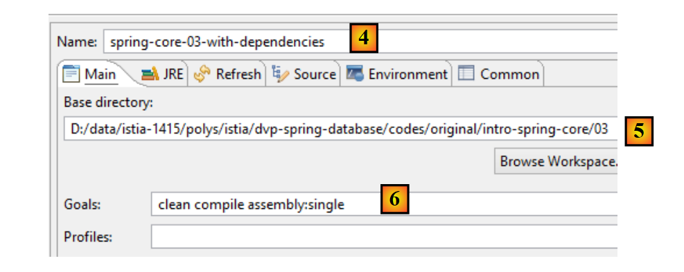 |
- [4-6] 表示一个 Maven 构建配置；
- 在 [4] 中，输入任意名称；
- 在 [5] 中，指定项目文件夹；
- 在 [6] 中，输入 Maven 目标：
- [clean]：删除项目的 [target] 文件夹；
- [compile]：编译项目。编译输出将放置在重新生成的 [target] 文件夹中；
- [assembly:single]：将项目及其依赖项的类文件打包到 [target] 文件夹中的单个 JAR 归档文件中；
执行后，得到以下结果：
 |
JAR 归档文件是一种压缩文件，可使用解压工具打开。解压上述归档文件后，将得到以下目录结构：
- 在 [8] 中，是项目依赖项的类；
- 在 [9] 中，是项目本身的类；
5.5. 示例-04
5.5.1. 目标
本示例基于文档《Spring IoC 入门》中的一个示例，该示例展示了 Spring 在配置多层架构方面的作用。在原始文档中，该示例使用了一个定义在 XML 文件中的 Spring 配置。在此，我们将使用基于 Java 类和注解的配置来实现该示例。
在此，我们希望为以下架构配置一个 Spring 项目：
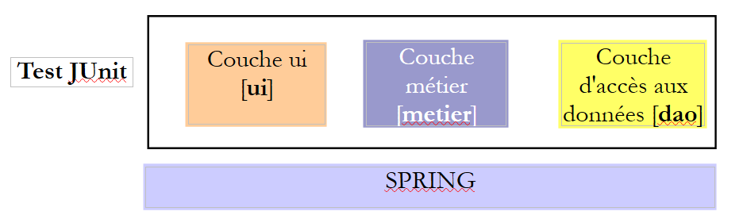 |
每个层都有一个由两个类实现的接口。我们希望演示，借助 Spring，我们可以更改一个层的实现，而对其他层的代码毫无影响。
5.5.2. Eclipse 项目
5.5.2.1. 生成
我们创建一个新的项目类型：
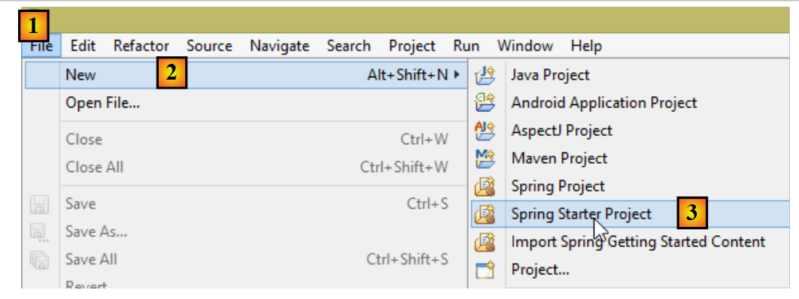 |
 |
- 在 [4] 中，输入 Eclipse 项目的名称；
- 在 [5] 中，选择 Maven 项目；
- 在 [6] 中，选择 Java 版本 >=1.7；
- 在 [7] 中，选择建议的 Spring Boot 版本；
- [8-11] 中的信息是 Maven 相关信息；
- 在 [12] 中，您可以选择一个或多个建议的依赖项。这将向 Maven [pom.xml] 文件中添加若干依赖项；
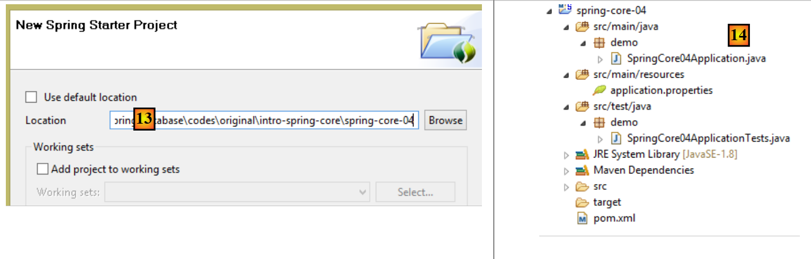 |
- 在 [13] 中，选择一个现有的空文件夹来存放该项目；
- 在 [14] 中，是生成的项目。我们将对其组件进行分解；
该项目是一个由以下 [pom.xml] 文件配置的 Maven 项目：
<?xml version="1.0" encoding="UTF-8"?>
<project xmlns="http://maven.apache.org/POM/4.0.0" xmlns:xsi="http://www.w3.org/2001/XMLSchema-instance"
xsi:schemaLocation="http://maven.apache.org/POM/4.0.0 http://maven.apache.org/xsd/maven-4.0.0.xsd">
<modelVersion>4.0.0</modelVersion>
<groupId>istia.st.spring.core</groupId>
<artifactId>spring-core-04</artifactId>
<version>0.0.1-SNAPSHOT</version>
<packaging>jar</packaging>
<name>spring-core-04</name>
<description>Programmation par interfaces</description>
<parent>
<groupId>org.springframework.boot</groupId>
<artifactId>spring-boot-starter-parent</artifactId>
<version>1.2.3.RELEASE</version>
<relativePath/> <!-- lookup parent from repository -->
</parent>
<properties>
<project.build.sourceEncoding>UTF-8</project.build.sourceEncoding>
<start-class>demo.SpringCore04Application</start-class>
<java.version>1.8</java.version>
</properties>
<dependencies>
<dependency>
<groupId>org.springframework.boot</groupId>
<artifactId>spring-boot-starter</artifactId>
</dependency>
<dependency>
<groupId>org.springframework.boot</groupId>
<artifactId>spring-boot-starter-test</artifactId>
<scope>test</scope>
</dependency>
</dependencies>
<build>
<plugins>
<plugin>
<groupId>org.springframework.boot</groupId>
<artifactId>spring-boot-maven-plugin</artifactId>
</plugin>
</plugins>
</build>
</project>
- 第 6–12 行：包含在项目创建向导中输入的信息；
- 第 14–19 行：父级 Maven 项目，其中定义了若干库及其版本。如果其中任何一个是项目依赖项，它们将在 [pom.xml] 文件中列出，但不包含其版本；
- 第 23 行：仅当您打算生成项目的可执行归档文件时才使用此行。否则，该行将不被使用；
- 第 28–31 行：Spring Boot 项目的最小依赖项。请注意，我们并未从复选框列表中选择任何依赖项；
- 第 33–37 行：管理与 Spring 集成的 JUnit 单元测试 [http://junit.org/] 所需的依赖项。第 36 行表明该依赖项仅用于测试。因此，它不会包含在项目归档中；
- 第 42–45 行：用于生成项目 Maven 工件的插件；
该文件提供的依赖项列表如下 [1]：
 |
我们将看到，这些对于我们此处要实现的功能已经足够。
5.5.2.2. 可执行类
 |
可执行类 [SpringCore04Application] [[2] 如下所示：
package demo;
import org.springframework.boot.SpringApplication;
import org.springframework.boot.autoconfigure.SpringBootApplication;
@SpringBootApplication
public class SpringCore04Application {
public static void main(String[] args) {
SpringApplication.run(SpringCore04Application.class, args);
}
}
- 第 6 行：[@SpringBootApplication] 注解是 [@Configuration、@EnableAutoConfiguration、@ComponentScan] 这三个注解的简写形式，这意味着：
- [SpringCore04Application] 类是一个 Spring 配置类；
- 指示 Spring Boot 根据项目类路径中找到的类（本例中即 Maven 依赖项）进行配置；
- 检查当前目录（即 [SpringCore04Application] 类的所在目录）以查找其他 Spring 组件；
- 第 10 行：执行静态方法 [SpringApplication.run]。其第一个参数是 Spring 配置类，此处即 [SpringCore04Application] 类。其第二个参数是传递给 [main] 方法（第 9 行）的参数列表。 静态方法 [SpringApplication.run] 负责创建 Spring 上下文，即创建配置类中或 [@ComponentScan] 注解扫描到的目录中发现的各种 Bean。此处的 [main] 方法除此之外不做其他操作。为了使其更具实质内容，我们将对其进行如下修改：
package demo;
import org.springframework.boot.SpringApplication;
import org.springframework.boot.autoconfigure.SpringBootApplication;
import org.springframework.context.ConfigurableApplicationContext;
@SpringBootApplication
public class SpringCore04Application {
public static void main(String[] args) {
// spring context instantiation
ConfigurableApplicationContext context = SpringApplication.run(SpringCore04Application.class, args);
// context display
System.out.println("---------------- Liste des beans Spring");
for (String beanName : context.getBeanDefinitionNames()) {
System.out.println(beanName);
}
// closing context
context.close();
}
}
- 第 12 行：静态方法 [SpringApplication.run] 返回其构建的 Spring 上下文；
- 第 15–17 行：显示该上下文中所有 Bean 的名称；
应用程序可通过以下方式运行 [1-3]。标准方法 [Run As Java Application] 同样有效。
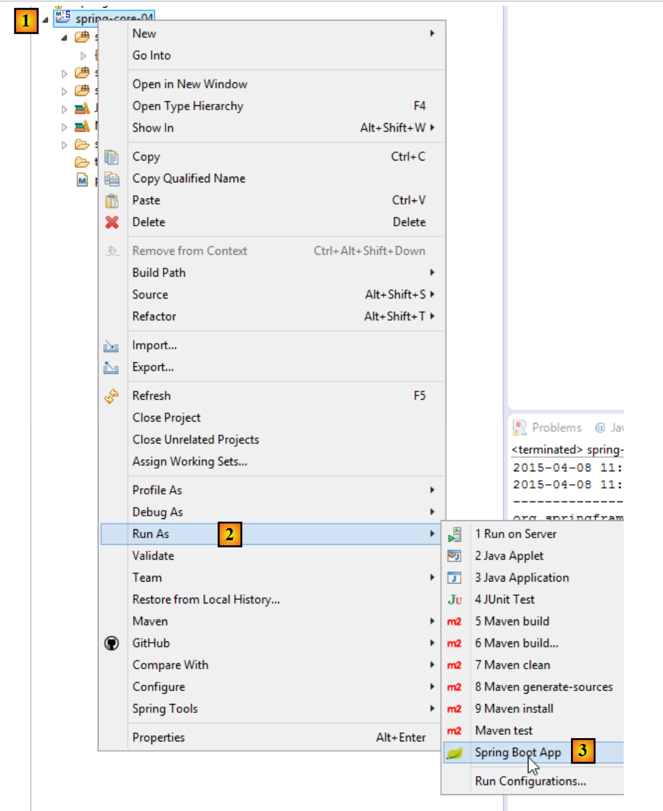 |
得到以下结果：
- 第 14–28 行：来自 Spring 上下文的 Bean。我们尚不清楚它们的作用。我们在第 18 行发现了 [springCore04Application] 这个 Bean，由于它带有 [@SpringBootApplication] 注解，因此自动成为 Spring Bean；
- 其余行均为 [INFO] 级别的 Spring 日志。如前所述，这些日志可通过放置在项目类路径中的 [logback.xml] 文件进行控制：
 |
<configuration>
<appender name="STDOUT" class="ch.qos.logback.core.ConsoleAppender">
<!-- encoders are by default assigned the type
ch.qos.logback.classic.encoder.PatternLayoutEncoder -->
<encoder>
<pattern>%d{HH:mm:ss.SSS} [%thread] %-5level %logger{36} - %msg%n</pattern>
</encoder>
</appender>
<!-- log level control -->
<root level="warn"> <!-- info, debug, warn -->
<appender-ref ref="STDOUT" />
</root>
</configuration>
如果在上面的第 12 行中，我们将级别设置为 [warn] 而不是 [info]，则会得到以下结果：
日志已消失。现在只显示[warn]级别的消息，而这里原本没有任何日志。
5.5.3. 架构各层的实现
 |
接下来我们将实现上述架构的三个层：
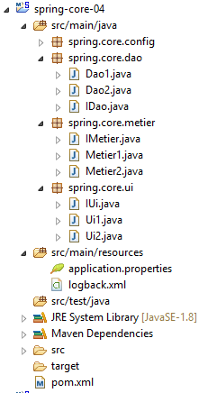 |
[DAO] 层由 [spring.core.dao] 包实现。它提供了以下 [IDao] 接口：
package spring.core.dao;
public interface IDao {
public int doSomethingInDaoLayer(int a, int b);
}
该接口有两个实现：[Dao1] 和 [Dao2]：
package spring.core.dao;
public class Dao1 implements IDao {
public int doSomethingInDaoLayer(int a, int b) {
return a+b;
}
}
package spring.core.dao;
public class Dao2 implements IDao {
public int doSomethingInDaoLayer(int a, int b) {
return a-b;
}
}
[业务]层由[spring.core.business]包实现。它提供了以下[IMetier]接口：
package spring.core.metier;
public interface IMetier {
public int doSomethingInMetierLayer(int a, int b);
}
该接口有两个实现：[Business1] 和 [Business2]：
package spring.core.metier;
import spring.core.dao.IDao;
public class Metier1 implements IMetier {
private IDao dao;
public int doSomethingInMetierLayer(int a, int b) {
a++;
b++;
return dao.doSomethingInDaoLayer(a, b);
}
public void setDao(IDao dao) {
this.dao = dao;
}
}
package spring.core.metier;
import spring.core.dao.IDao;
public class Metier2 implements IMetier {
private IDao dao;
public int doSomethingInMetierLayer(int a, int b) {
a--;
b++;
return dao.doSomethingInDaoLayer(a, b);
}
public void setDao(IDao dao) {
this.dao = dao;
}
}
[UI] 层由 [spring.core.ui] 包实现。它提供了以下 [IUi] 接口：
package spring.core.ui;
public interface IUi {
public int doSomethingInUiLayer(int a, int b);
}
该接口有两个实现：[Ui1] 和 [Ui2]：
package spring.core.ui;
import spring.core.metier.IMetier;
public class Ui1 implements IUi {
private IMetier metier;
public int doSomethingInUiLayer(int a, int b) {
a++;
b++;
return metier.doSomethingInMetierLayer(a, b);
}
public void setMetier(IMetier metier) {
this.metier = metier;
}
}
package spring.core.ui;
import spring.core.metier.IMetier;
public class Ui2 implements IUi {
private IMetier metier;
public int doSomethingInUiLayer(int a, int b) {
a--;
b++;
return metier.doSomethingInMetierLayer(a, b);
}
public void setMetier(IMetier metier) {
this.metier = metier;
}
}
5.5.4. Spring 项目配置
 |
配置类 [Config] 如下所示：
package spring.core.config;
import org.springframework.context.annotation.Bean;
import org.springframework.context.annotation.Configuration;
import spring.core.dao.Dao1;
import spring.core.dao.Dao2;
import spring.core.dao.IDao;
import spring.core.metier.IMetier;
import spring.core.metier.Metier1;
import spring.core.metier.Metier2;
import spring.core.ui.IUi;
import spring.core.ui.Ui1;
import spring.core.ui.Ui2;
@Configuration
public class Config {
// -------------- implementation [Ui1, Metier1, Dao1]
@Bean
public IDao dao1() {
return new Dao1();
}
@Bean
public IMetier metier1(IDao dao1) {
Metier1 metier = new Metier1();
metier.setDao(dao1);
return metier;
}
@Bean
public IUi ui1(IMetier metier1) {
Ui1 ui = new Ui1();
ui.setMetier(metier1);
return ui;
}
// -------------- implementation [Ui2, Metier2, Dao2]
@Bean
public IDao dao2() {
return new Dao2();
}
@Bean
public IMetier metier2(IDao dao2) {
Metier2 metier = new Metier2();
metier.setDao(dao2);
return metier;
}
@Bean
public IUi ui2(IMetier metier2) {
Ui2 ui = new Ui2();
ui.setMetier(metier2);
return ui;
}
}
- 第 20–23 行：名为 [dao1]（方法名）的 Bean 是类 [Dao1]（第 22 行）的实例，该类被视为接口 [IDao]（第 21 行）的实现。 因此，Bean [dao1] 被视为接口的实例（这种说法虽不准确但可以理解），而非类的实例。这一点非常重要。所有其他 Bean 也将是接口的实例；
- 第 25–30 行：由 [Metier1] 类实现的 [IMetier] 接口的实例；
- 第 32–37 行：由 [Ui1] 类实现的 [IUi] 接口的实例；
- 第 20–37 行：使用实例 [Ui1, Metier1, Dao1] 实现 [UI, Business, DAO] 层；
- 第 40–57 行：使用实例 [Ui2, Business2, Dao2] 实现 [UI, Business, DAO] 层；
5.5.5. 单元测试 [JUnitTest]
 |
[JUnitTest] 类位于 Maven 项目的 [src/test/java] 目录中。该目录中的文件不会被包含在最终的项目归档中。其代码如下：
package spring.core.tests;
import org.junit.Assert;
import org.junit.Test;
import org.junit.runner.RunWith;
import org.springframework.beans.factory.annotation.Autowired;
import org.springframework.beans.factory.annotation.Qualifier;
import org.springframework.boot.test.SpringApplicationConfiguration;
import org.springframework.test.context.junit4.SpringJUnit4ClassRunner;
import spring.core.config.Config;
import spring.core.dao.IDao;
import spring.core.metier.IMetier;
import spring.core.ui.IUi;
@SpringApplicationConfiguration(classes = { Config.class })
@RunWith(SpringJUnit4ClassRunner.class)
public class JUnitTest {
...
}
- 第 16 行：[@SpringApplicationConfiguration] 注解是 Spring Boot Test 项目（第 8 行）的一部分。它是通过 [pom.xml] 文件中的以下依赖引入的：
<dependency>
<groupId>org.springframework.boot</groupId>
<artifactId>spring-boot-starter</artifactId>
</dependency>
该注解的参数是用于构建测试所需 Spring 上下文的配置类列表。这里我们使用前面已经介绍过的 [Config] 配置类；
- 第 17 行：[@RunWith] 注解是 JUnit 注解（第 5 行）。其参数指定负责运行测试的类，而非默认的 JUnit 框架类。该类是一个 Spring 类（第 9 行）。它将使用测试类中存在的 Spring 注解；
完整的类如下所示
...
@SpringApplicationConfiguration(classes = { Config.class })
@RunWith(SpringJUnit4ClassRunner.class)
public class JUnitTest {
// layer [UI]
@Autowired
@Qualifier("ui1")
private IUi ui1;
@Autowired
@Qualifier("ui2")
private IUi ui2;
// business] layer
@Autowired
@Qualifier("metier1")
private IMetier metier1;
@Autowired
@Qualifier("metier2")
private IMetier metier2;
// layer [dao]
@Autowired
@Qualifier("dao1")
private IDao dao1;
@Autowired
@Qualifier("dao2")
private IDao dao2;
@Test
public void testDao() {
Assert.assertEquals(30, dao1.doSomethingInDaoLayer(10, 20));
Assert.assertEquals(-10, dao2.doSomethingInDaoLayer(10, 20));
}
@Test
public void testMetier() {
Assert.assertEquals(32, metier1.doSomethingInMetierLayer(10, 20));
Assert.assertEquals(-12, metier2.doSomethingInMetierLayer(10, 20));
}
@Test
public void testUI() {
Assert.assertEquals(34, ui1.doSomethingInUiLayer(10, 20));
Assert.assertEquals(-14, ui2.doSomethingInUiLayer(10, 20));
}
}
- 第 8–10 行：我们注入（第 8 行）名为（第 9 行）[ui1] 的 Bean。请注意，在第 10 行，我们注入的是接口实例而非类实例；
- 第 21–32 行：[Config] 类中定义的其他 Bean 也是以同样的方式注入的；
- 第 34 行：[@Test] 注解用于标记在测试期间执行的方法。其他可能的注解如下：
- [@BeforeClass]：在开始测试前执行的方法；
- [@AfterClass]：所有测试完成后执行的方法；
- [@Before]：在每次测试开始前执行的方法；
- [@After]：在每次测试结束后执行的方法；
- 第 36 行：我们验证调用 [dao1.doSomethingInDaoLayer(10, 20)] 是否返回 30。按惯例，第一个参数是预期值，第二个是实际值；
- 第 36 行：测试 [IDao] 接口的 [dao1] 实例；
- 第 37 行：测试 [IDao] 接口的 [dao2] 实例；
- 第 42 行：测试 [IMetier] 接口的 [metier1] 实例；
- 第 43 行：测试 [IMetier] 接口的 [metier2] 实例；
- 第 48 行：测试接口 [IUi] 的实例 [ui1]；
- 第 36 行：测试接口 [IUi] 的实例 [ui2]；
测试方法中可使用的断言如下：
- assertEquals(expression1, expression2)：检查两个表达式的值是否相等。支持多种表达式类型（int、String、float、double、boolean、char、short）。如果两个表达式不相等，则抛出类型为 [AssertionFailedError] 的异常，
- assertEquals(real1, real2, delta)：检查两个实数是否在误差 delta 范围内相等，即 abs(real1-real2) <= delta。例如，可以编写 assertEquals(real1, real2, 1E-6) 来验证两个值在 10⁻⁶ 误差范围内相等，
- assertEquals(message, expression1, expression2) 和 assertEquals(message, real1, real2, delta) 是允许您指定错误消息的变体，该消息将与 [assertEquals] 方法失败时抛出的 [AssertionFailedError] 异常相关联，
- assertNotNull(Object) 和 assertNotNull(message, Object)：检查 Object 引用是否为空，
- assertNull(Object) 和 assertNull(message, Object)：检查 Object 引用是否为空，
- assertSame(Object1, Object2) 和 assertSame(message, Object1, Object2)：检查 Object1 和 Object2 引用是否指向同一个对象，
- assertNotSame(Object1, Object2) 和 assertNotSame(message, Object1, Object2)：检查 Object1 和 Object2 引用是否不指向同一个对象；
要运行此测试，请按以下步骤操作：
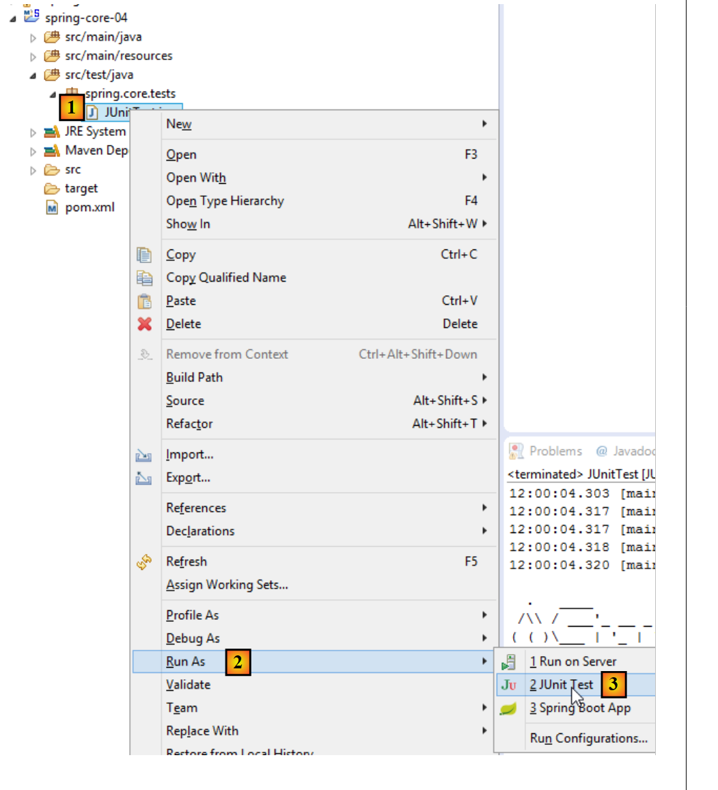 |
得到以下结果：
 |
这里，所有测试均通过。这个示例说明了什么？它展示了Spring框架在配置分层架构时所提供的灵活性。您只需通过配置，即可选择使用[Ui1, Metier1, Dao1]或[Ui2, Metier2, Dao2]的实现方案。 因此，在之前的 JUnit 测试中，如果你仅保留 [ui1, metier1, dao1] bean 的注入，你就正在使用第一种架构。要更改架构，只需更改被注入的 bean 即可。这无需修改实现接口的各层的代码。这种编程方式被称为基于接口的编程，因为我们不使用实现各层的类的实例，而是使用其接口的实例。
5.6. 结论
- Spring 管理着单例（单实例）对象。Spring 还管理着每次向 Spring 请求实例时都会被实例化的对象。本文档也将介绍这种情况；
- 这些对象可以通过多种方式声明，且这些方式可以组合使用：
- 在 XML 文件中，
- 在带有 [@Configuration] 注解的 Java 类中，
- 在标注了 [@Component, @Service, ...] 的任何 Java 类中；
- 可以通过 [@Autowired] 注解将一个 Spring 对象注入到另一个 Spring 对象中。这被称为依赖注入（DI）；
- 当与基于接口的编程范式结合使用时，Spring 对于配置分层架构非常有用；